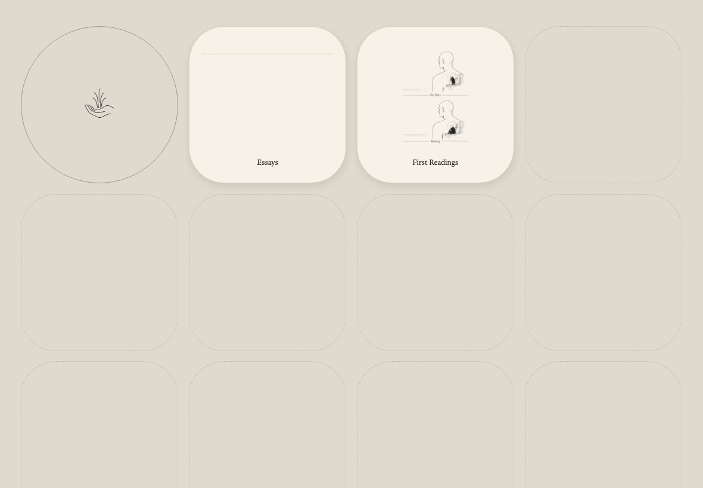

Did the Machine Actually Read the Book?
On artificial intelligence, memory, and the continuity of understanding
Ask an AI to read a novel, and it will probably give you an answer. It may be eloquent, convincing, even beautifully written. But ask a different question — Did you actually read the entire book? — and things become considerably less clear.
A language model can receive thousands of pages without understanding how their events relate. It can retrieve a passage without remembering what preceded it. It can produce a persuasive interpretation from fragments while giving the impression of having considered the whole. A progress bar reaching one hundred percent proves surprisingly little.
The problem is not simply that artificial intelligence forgets. Human readers forget, too. Yet reading is more than accumulating information. We form expectations, encounter contradictions, reconsider earlier judgments. Sometimes the meaning of a sentence changes only after another hundred pages. Understanding develops through time.
This is the problem we encountered while developing Reframe, Fountain Coach’s reading and writing environment. Early experiments with James Joyce’s Ulysses produced familiar AI failures: invented relationships, confused identities, and apparently insightful observations that could not be justified by the text. Attempts to remember everything created another danger. A system’s previous interpretations began acquiring authority they had never earned.
Our response was to distinguish memory from continuity.
Reading Continuity records which parts of a work have been examined, what evidence emerged, which questions remain open, and where an interpretation may need reconsideration. It does not pretend that every previous passage remains inside the model’s mind.
Drift Calculus takes the next step. It examines how interpretations change as reading progresses and how independent readings disagree. Difference is not automatically error. Agreement is not automatically truth. Both become reasons to return to the text.
The result is an unusual proposition: the continuity of understanding need not depend on the continuity of the intelligence doing the reading. Models can change, sessions can end, applications can restart. The history of inquiry can nevertheless remain available, inspectable, and open to correction.
This is not a claim that Reframe has solved machine comprehension. It is an attempt to establish the conditions under which such a claim could eventually be tested.
And perhaps that is the important shift. Instead of demanding that an artificial intelligence remember everything, we can build a reading environment capable of remembering what was discovered, what remains uncertain, and why we believed something in the first place.
A machine need not become an infallible reader to become a useful one.
It must become an accountable reader.

To Read Is Not to Remember
Interpretation, Discontinuity, and the Making of a Durable Reader. The full essay reconstructs Reframe's technical and intellectual development, examining reading continuity, compiled knowledge, two forms of drift calculus, the actual Ulysses experiments, and the limits of what present implementations prove. Includes documentary genesis and scientific references.